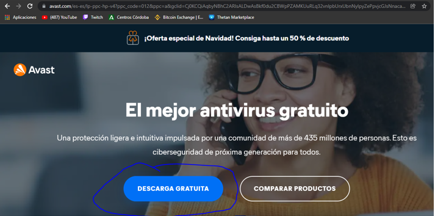
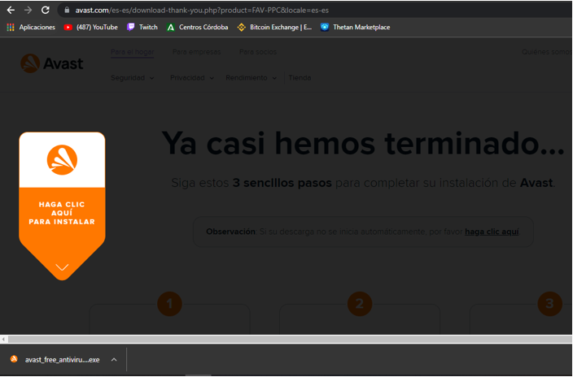
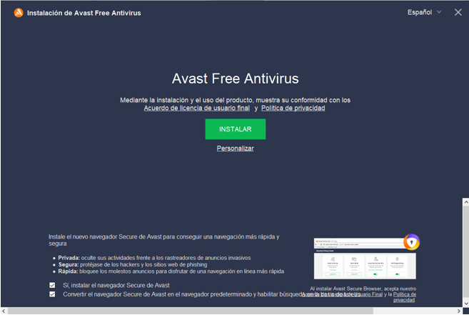
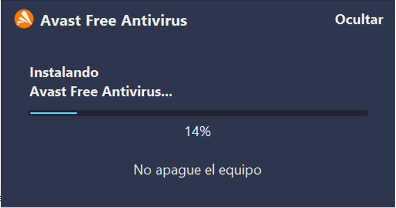
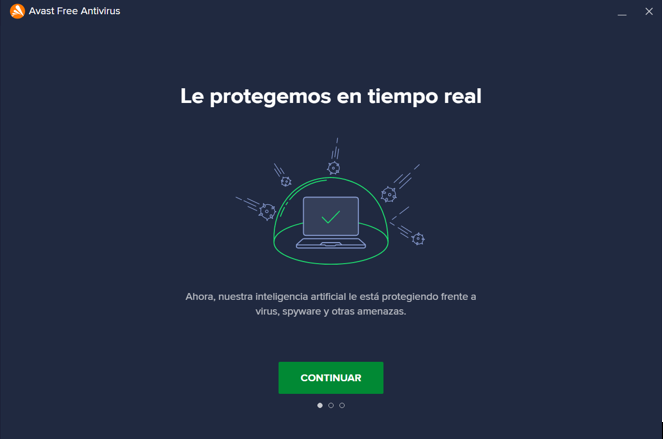
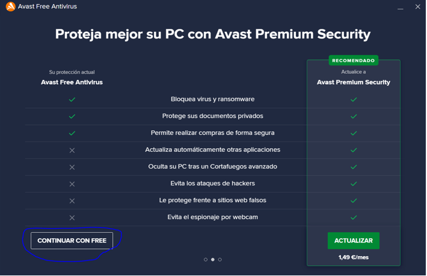
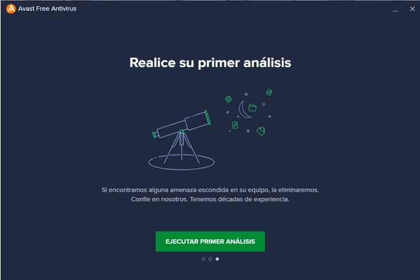
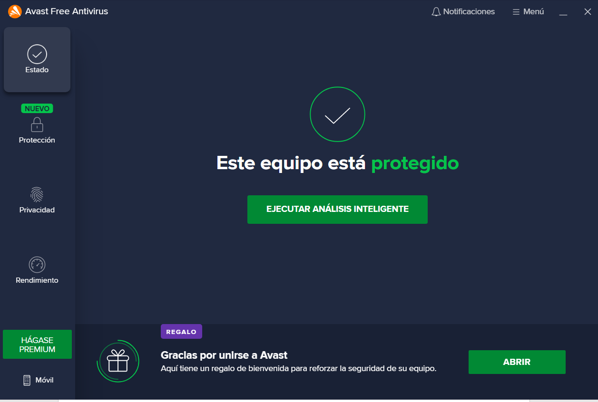

Paso1
Primero entramos en la página web oficial de Avast y elegimos la opción descarga gratuita.
Paso2
Al pulsar nos mandará directamente a otra página donde comenzará la descarga, si pulsamos en la descarga empezará la instalación .
Paso3
Una vez pulsado en la descarga nos aparecerá este cuadro donde vamos a empezar la instalación, clicamos en instalar.
Paso4
Nos aparecerá esta ventana donde comenzará a instalarse tendremos que esperar a que termine para poder seguir.
Paso5
Una vez terminado nos aparece esta ventana donde ya está instalado el programa.
Paso6
Nos da dos opciones comprar el Avast premium o seguir con el free nosotros vamos a seguir con el free.
Paso7
Y le damos a realizar nuestro primer análisis para ver si nuestro ordenador está limpio ahora mismo y termine la instalación.
Paso8
Una vez terminado el análisis ya hecho terminado de instalar el Avast.

Paso9
Cuando ya está instalada nos aparece este menú cada vez que abrimos Avast y aquí hemos terminado la instalación.
